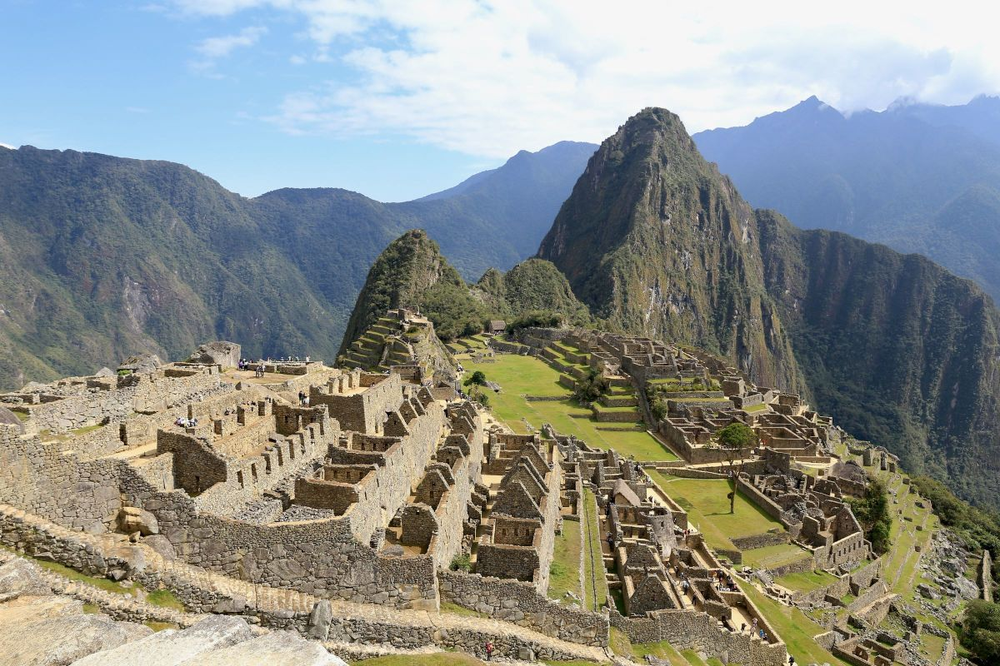
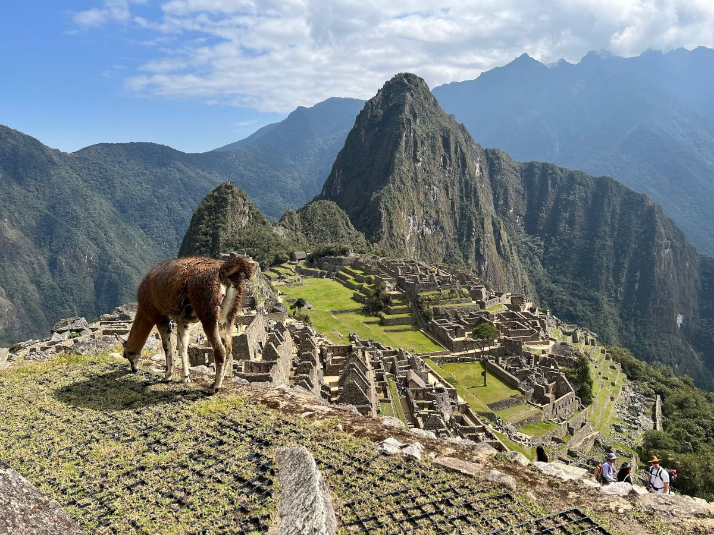
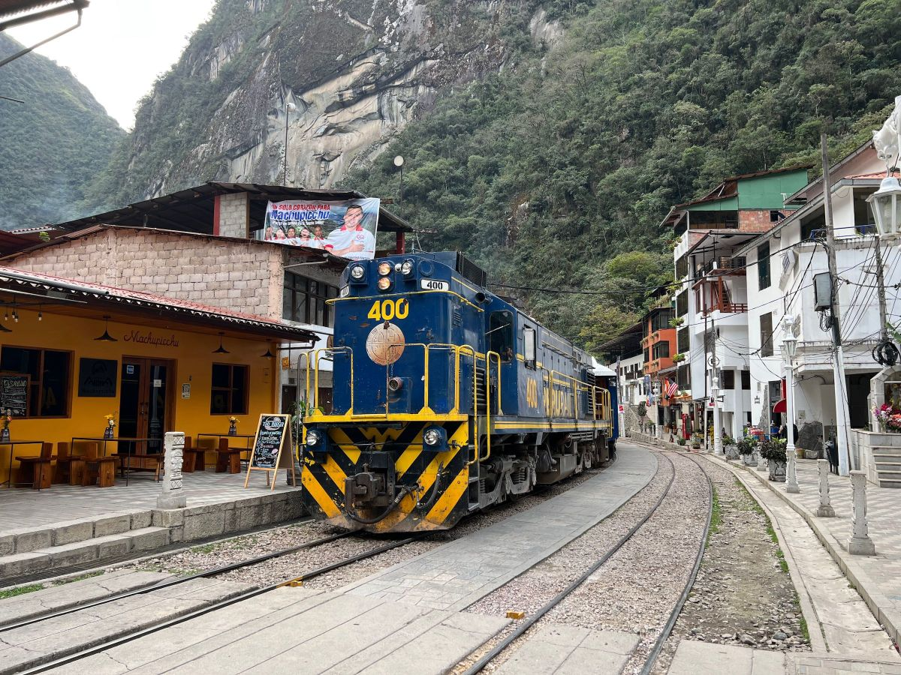

Entusiasta da fotografia, curiosa por outros idiomas, culturas, costumes e histórias!☺️
Machu Picchu é um sítio arqueológico localizado no Peru, reconhecido como uma das maravilhas do
mundo moderno! O lugar é impressionante sob inúmeros aspectos e merece entrar na sua lista de
destinos para ser desbravado ao menos uma vez na vida! Exalando uma energia incrível, é um museu
ao ar livre e uma verdadeira aula de conhecimento!
O que é Machu Picchu
A “cidade perdida dos Incas”, ou Machu Picchu, que significa "velha montanha" em quéchua, língua
nativa, foi uma das cidades do chamado "Império Inca". O lugar ainda tem boa parte de suas construções
originais e permite aos visitantes desvendar um pouquinho de um povo que guardava um conhecimento
muito avançado, especialmente para a época em que lá viveram. O sítio arqueológico está 2.450 metros
acima do nível do mar, em uma localização que desperta interesse justamente por ser de difícil acesso.

Machu Picchu foi toda construída por blocos de pedras encaixadas, sendo que a maior parte delas tem
entre 10 kg e 15 kg — mas algumas chegam a pesar 20 toneladas. O lugar tem cerca de 32 mil hectares e
reúne em torno de 200 estruturas em pedra granítica, que incluem terraços agrícolas, templos,
residências, paredes enormes e canais de irrigação.
As famílias que lá viviam tinham um conhecimento muito aprofundado sobre agricultura, astronomia,
matemática e acústica. É fantástica a experiência de visitar as ruínas e perceber o encaixe perfeito das
paredes construídas centenas de anos atrás. É quase impossível não se questionar como esse lugar tão
cheio de estrutura, em um lugar tão exótico pode ter existido e sido construído de forma tão grandiosa,
que até os dias atuais segue de pé!
Andar por Machu Picchu é conhecer a história, o modo de vida e se surpreender com o conhecimento
admirável que incas possuíam. Um passeio imperdível, com diversos segredos!
Machu Picchu foi uma das cidades do "Império Inca", cuja capital foi Cusco, e acredita-se que tenha sido
povoada entre os anos de 1450 a 1540. A cidadela aparentemente abrigava entre 500 e 750 pessoas e é a
prova viva da engenhosidade dessa civilização. Muitas informações que temos hoje são, na verdade,
teorias, porque não se tem comprovação de todas as informações a respeito dessa civilização, já que os
incas não tinham uma linguagem escrita.
O espaço teve como escolha um lugar de extraordinária localização, no alto de uma montanha, em uma
zona de difícil acesso, cercado pela mata tropical peruana e por outras enormes montanhas. O hoje sítio
arqueológico, considerado Patrimônio Natural e Cultural da Humanidade pela Unesco desde 1983, ficou
esquecido e escondido por dezenas de anos, até a chegada de Hiram Birgham, que tornou o local
público a nível mundial em 1911. Depois da chegada de Birgham, Machu Picchu ganhou notoriedade, foi
alvo de pesquisas, manutenções e estudos arqueológicos para entender melhor sobre a cultura inca e
seu surpreendente legado.

Onde ficar em Machu Picchu
Machu Picchu é um sítio arqueológico localizado no alto de uma montanha, em uma área de difícil
acesso. Como Cusco está a cerca de 4 horas de viagem, muitas pessoas optam por ficar hospedadas em
Machupicchu Pueblo, o vilarejo mais próximo do sítio arqueológico. Por lá, você encontrará diferentes
hotéis, com diversos níveis de conforto — Leia sobre onde ficar em Machu Picchu.
A lista a seguir apresenta ótimas opções de hotéis em Machu Picchu. As acomodações estão em ordem
alfabética e foram escolhidas pela nossa equipe, priorizando qualidade, preço das diárias e localização.
Também incluímos as notas do Booking.com, que indicam a avaliação que hóspedes reais tiveram da acomodação.
O sítio arqueológico de Machu Picchu está localizado no povoado peruano de Machu Picchu Pueblo,
que faz parte da Região de Cusco, nome também da cidade-capital dessa região peruana e que possui
em torno de 5 mil habitantes. O aeroporto mais próximo de Machu Picchu é o Aeroporto de Cusco, a
cerca de 80 km de distância, em um percurso que dura em torno de 4 horas.
Chegar a Machu Picchu não é exatamente fácil. O percurso é composto por diferentes etapas. O lugar foi
construído em uma localização difícil justamente para que não fosse facilmente atacado. A boa notícia é
que parte desse trajeto é feito de trem, em um caminho simplesmente maravilhoso!

Considerando que o percurso entre Cusco e Machu Picchu leva em torno de 4 horas, ir ao sítio
arqueológico para passar o dia pode ser exaustivo. Por isso, muitas pessoas optam por dormir em
MachuPicchu Pueblo — o povoado onde fica o sítio arqueológico de Machu Picchu — e assim evitar
fazer percursos longos no mesmo dia. Saiba como chegar a Machu Picchu.
Quando ir a Machu Picchu
Machu Picchu e a região ao seu redor têm uma estação chuvosa (verão) e uma estação mais seca
(inverno). É importante entender bem as diferenças de cada período para fazer a escolha certa da
data da viagem. Leia mais dicas sobre quando ir a Machu Picchu.
A moeda utilizada no Peru é o Novo Sol e os cartões de crédito e débito são amplamente aceitos em
todo o país. Para pagar os nossos gastos nessa viagem, utilizei o cartão da Nomad, que é um banco
digital internacional. Inseri dólares na minha conta da Nomad através de um PIX no Brasil e usei o cartão
físico da Nomad para fazer o saque em um caixa eletrônico em euros, ou simplesmente efetuei os
pagamentos direto da minha conta de débito internacional usando meu cartão — tudo bem simples e rápido.
Como ganhar até US$ 20 de bônus com a Nomad
Se você ainda não é cliente, baixe o app Nomad clicando aqui e utilize o cupom MDGUIA no código de
convidado (não pule essa etapa!). Depois, insira os seus dados pessoais e envie a foto de seu passaporte,
RG ou CNH. Pronto: você receberá um bônus de 2% do valor da sua primeira operação de câmbio,
limitado a US$ 20 de bônus (cerca de R$ 100), em até 15 dias úteis. Aproveite, pois é por tempo limitado!
Machu Picchu — informações básicas
Altitude em Machu Picchu: 2450 metros
Aeroporto mais próximo de Machu Picchu: Aeroporto de Cusco, Cusco - Peru
Moeda: Novo Sol
Precisa de passaporte para visitar Machu Picchu? Não, basta o RG
Precisa de visto para conhecer Machu Picchu? Não
Vacinas são obrigatórias para ir a Machu Picchu? Não, mas há vacinas recomendadas.
Veja tudo sobre Machu Picchu
O Guia de Destinos foi lançado em 2012 e é um dos sites mais
completos e visitados sobre turismo na internet brasileira. Aqui você
encontra guias gratuitos dos principais destinos e cidades dos cinco
continentes, com informações importantes, fotos e dicas inéditas para
a sua viagem! Todos os nossos guias são inéditos e produzidos com
exclusividade por nossa equipe.
O Guia de Destinos é parte do Melhores Destinos, o maior site de
promoções de passagens aéreas e viagens do Brasil. Todos os dias
nossa equipe pesquisa milhares de tarifas e alerta nossos leitores
sempre que encontra alguma oportunidade de viajar barato, além das
principais notícias e dicas de viagem.